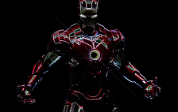

• Дизайн костюма «Марк 3» был создан Филом Сандерсом и Ади Грановом (художник комиксов про Железного человека). Сам костюм, затем, был сконструирован Stan Winston Studios.
• Роберт Дауни мл., после окончания съемок фильма 26 июня 2007 года, был вовлечен в 8-месячную работу со спецэффектами, чтобы с точностью передать все движения Железного человека.
• Пеппер Поттс использует телефон LG KS20. Тони Старк — LG VX9400. Джеймс Роудс — LG KG810.
• Заключительная схватка напоминает драку Робокопа и металлического наркоторговца Кейна из фильма «Робокоп 2» (1990).
• Это первый фильм, полностью финансировавшийся Marvel Studios.
• Джон Фавро решил снимать фильм в Калифорнии, так как, по его мнению, слишком много фильмов про супергероев было снято на Восточном побережье, в частности в Нью-Йорке.
• Николас Кейдж и Том Круз были заинтересованы в исполнении роли Железного человека. В частности, Том Круз планировал спродюсировать фильм и исполнить главную роль.
• По уже сложившейся традиции, автор комикса Стэн Ли снялся в камео: он играет человека, которого главный герой по ошибке принимает за Хью Хефнера — создателя «Плейбоя».
• В фильме неоднократно звучит музыкальная тема из мультфильма «Непобедимый Железный человек» (1966) (казино, постельная сцена и рингтон на мобильнике Роудса).
• Прототипом Тони Старка является изобретатель Ховард Хьюз.
• Во время съемки сцены с танком кинематографисты разбили камеру.
• Пол Беттани озвучил все реплики Джарвиса за 2 часа.
• Изначально, главным злодеем должен был стать Мандарин, однако Джон Фавропосчитал его слишком фантастическим и устаревшим. Если бы Мандарин и появился в фильме, то в качестве индонезийского террориста.
• На роль Тони Старка рассматривались кандидатуры Клайва Оуэна и Сэма Рокуэлла.
• По данному фильму была сделана одноименная игра.
• Гвинет Пэлтроу согласилась на роль Вирджинии Пеппер Поттс при условии, что съемки с ее участием будут проходить недалеко от дома. В итоге на площадку Пэлтроу добиралась за 15 минут.
• На первых минутах фильма, когда Тони Старк попадает в руки террористов и за него требуют выкуп, на заднем фоне можно заметить растянутое полотно, с символикой, которую использовали в фильме «Железный человек 3» (2013) перед началом трансляции Мандарина.
• Во время подготовки к роли Тони Старка Роберт Дауни мл. ориентировался на образ американского миллиардера, изобретателя и мецената Элона Маска, который помимо прочего является владельцем или основателем таких компаний как PayPal, SpaceX и Tesla Motors.
• Рэйчел МакАдамс была первым выбором Джона Фавро на роль Пеппер Поттс, но она отклонила предложение.
• После титров следует небольшая бонусная сцена. В ней появляется Сэмюэл Л. Джексонв роли Ника Фьюри.
• В сцене, где Пеппер в мастерской обнаруживает снимающего броню Тони, можно заметить щит Капитана Америки, которым во второй части Железного человека Тони Старк подпер свою установку.
• Аль Пачино рассматривался на роль Джастина Хаммера.
• Эмили Блант должна была сыграть Черную Вдову, но ей пришлось отказаться от роли из-за занятости на «Путешествиях Гулливера» (2010).
• Геннадий Тартаковский сделал раскадровки к экшн-сценам фильма.
• Микки Рурк посоветовал, чтобы его персонаж частично говорил на русском.
• Роберт Дауни-мл. порекомендовал Джастина Теру Джону Фавро в качестве сценариста фильма.
• Первый сиквел, спродюсированный студией Marvel Studios.
• Первый сиквел Джона Фавро и как режиссера, и как актера.
• Дон Чидл заменил Терренса Ховарда в роли Роуди, после ухудшения отношений между Терренсом и студией Marvel Studios.
• Хлыст (Микки Рурк), как он изображен в фильме, — сочетание двух злодеев Железного человека — Хлыста, владеющего специальным хлыстом, и Кримсон Динамо, носящего броню, контролирующую электричество.
• Сэмюэл Л. Джексон, появившись в первом фильме в роли Ника Фьюри, перед началом съёмок второй части заключил уникальную сделку с Marvel Studios, согласно условиям которой он появится в девяти фильмах в образе Ника.
• Скарлетт Йоханссон настолько сильно хотела получить роль Черной Вдовы, что покрасила волосы в рыжий цвет, еще до того как её утвердили на роль.
• По словам Дона Чидла, он пытался сыграть Роуди по-своему, однако, в конце концов, большую часть образа он скопировал с Терренса Ховарда.
• Для роли Черной Вдовы Скарлетт Йоханссон усиленно тренировалась шесть недель до начала съёмок и продолжала тренировки на протяжении шестимесячного съёмочного периода.
• Сэм Рокуэлл, сыгравший Джастина Хаммера, рассматривался на роль Тони Старка в первой части.
• В комиксе Джастин Хаммер — пожилой человек, однако для фильма его специально «омолодили», чтобы он лучше подходил на роль соперника Тони Старка.
• Дизайн хлыстов Ванко вдохновлен световыми мечами джедаев из «Звездных войн».
• В качестве Черной Вдовы продюсеры рассматривали Эмили Блант, Джессику Бил, Джессику Альбу, Натали Портман и Анджелину Джоли.
• Йоханссон вдохновлялась игрой Греты Гарбо в «Ниночке» (1939) и Барбары Бахв «Шпион, который меня полюбил».
• В ящике с вещами отца Тони Старка, полученном от Ника Фьюри, можно заметить реально вышедший в послевоенный период выпуск комикса «Капитан Америка».
• Как и в первой части, Тони Старк принимает за кого-то другого Стэна Ли. В этой части он принял его за Ларри Кинга.
• После финальных титров можно заметить атрибут другого персонажа вселенной Marvel — молот Тора.
• Саундтрек к первой части фильма был в основном написан немцем иранского происхождения Рамином Джавади. В сиквеле же Фавро полностью изменил подход к звуковой дорожке. На сей раз туда вошли песни легендарных австралийцев AC/DC, в частности композиции Shoot to thrill, Back in Black, T.N.T, Highway to Hell и Thunderstruck.
• Рурк очень хотел очеловечить своего злодея, чтобы он не был однобоким, поэтому режиссер Джон Фавро «разрешил» Ванко завести в тюремной камере попугая какаду.
• В одной из сцен можно заметить досье на Тони Старка, из которого следует, что он родился 29 мая 1970 года, знает английский, испанский, итальянский и афганско-персидский язык Дари, окончил Академию Филлипса и Массачусетский технологический институт.
• В фильме самого себя сыграл американский миллиардер и изобретатель Элон Маск. Роберт Дауни мл. ориентировался на его образ, когда готовился к роли Тони Старка.
• Железный Человек создан Стэном Ли, Ларри Либиром, Доном Хеком и Джеком Кирбив 1963 году в комиксе Tales of Suspense, # 39.
• Джемма Артертон, Дайан Крюгер и Айла Фишер рассматривались на роль, которую в итоге получила Джессика Честейн. Однако из-за конфликта в графике Честейн впоследствии пришлось отказаться от съемок в картине. Ее заменила Ребекка Холл.
• Джуд Лоу рассматривался на роль Олдрича Киллиана.
• Студия Disney купила у Paramount права на распространение за 115 миллионов долларов. Также в эту сделку попал и фильм «Мстители» (2012). Однако, как и с «Мстителями», одним из условий сделки было то, что студия Disney будет упоминаться только в финальных титрах как дистрибьютор Walt Disney Studios Motion Pictures.
• Первоначально Marvel Studios и Walt Disney Pictures собирались снимать этот фильм в Мичигане из-за налоговых льгот. После того как Северная Каролина гарантировала налоговую скидку в 20 миллионов долларов, продюсеры решили проводить съемки там вместо Мичигана.
• Это первый фильм серии, чьим режиссером не стал Джон Фавро, который также отказался заниматься фильмами «Волшебное королевство» и «Парни из Джерси». Он признался, что получил даже больше удовольствия от исполнения роли Хогана в третьей части «Железного человека», не занимаясь при этом режиссурой фильма. Как он выразился, он был как «гордый дедушка, который может играть с ребенком, но при этом ему не придется менять подгузники».
• Одна из сцен была снята в помещении компании Epic Games. Этот разработчик видеоигр известен своей франшизой Gears of War.
• В комиксах псевдоним Железный Патриот принадлежал противнику Человека-паука, Зеленому Гоблину. В этом фильме это новый набор брони Железного Человека, на которую нанесена расцветка Капитана Америка. Продюсер Кевин Файги сказал: «Это «Мстители» спасли всех, а не правительство, которое чувствует, что ему нужен свой собственный герой. Это дало нам больший простор, чтобы поработать над персонажем Роуди, показать, как он разрывается между лояльностью к своему другу и своими должностными обязанностями».
• Работа над фильмом была приостановлена 15 августа 2012 года, когда Роберт Дауни-мл. повредил лодыжку во время исполнения трюка.
• Шейн Блэк описал фильм как «триллер Тома Клэнси» с акцентом на реальных злодеях, а не на «двух мужчинах в железных костюмах, сражающихся друг с другом».
• Кевин Файги описал этот фильм так: «Фильм полностью сконцентрирован на Тони Старке. Его лишили всего, и ему придется использовать свой интеллект, чтобы найти выход из этого положения. Он не может позвать Тора, Капитана Америка или Ника Фьюри». Роберт Дауни-мл. описал своего персонажа как находящегося под влиянием мира после событий фильма «Мстители» (2012).
• Энди Лау предлагали роль Радиоактивного Человека, но он отказался в связи с рождением своего первого ребенка. Затем Чэнь Даомин и Ву Сюбовере (Wu Xiubowere) рассматривались на эту роль, но в итоге она досталась Сюэци Вану.
• Роберт Дауни-мл. ранее снимался в фильме Шейна Блэка «Поцелуй навылет» (2005) и положительно отзывался о том, что он пришел на смену Джону Фавро, сказав, что «привлечение в проект Блэка на роль сценариста и режиссера было единственным возможным вариантом, на который Фавро, студия Marvel и я могли подписаться».
• Это первый раз, когда Сэмюэл Л. Джексон не появляется в фильме о Железном Человеке как Ник Фьюри.
• Фильм снят отчасти по комиксам серии Extremis Уоррена Эллиса и Sentient Armor Джо Куэсады, а также по оригинальной истории о противнике Железного Человека, Мандарине.
• В отличие от первых двух фильмов серии, в этом компания Industrial Light and Magic уже не работала над видеоэффектами. Вместо нее этим занимались Digital Domain и Weta Digital.
• По словам Кевина Файги, персонаж Мандарина был создан по образу полковника Курца из фильма «Апокалипсис сегодня» (1979). «Он представляет такой род террористов, которые работали на разведывательное ведомство и сходили с ума, становясь одержимыми военными тактиками».
• A. I. M. («Передовые идеи механики») — это научная организация, возглавляемая Олдричем Киллианом. В комиксах это была более простая организация злых ученых-террористов.
• Съемки фильма начались 25 мая 2012 в Уилмингтоне, Северная Каролина. Павильонные съемки прошли на студии Sony Screen Gems Studios. Среди других съемочных локаций: Роули, Северная Каролина и Майами, Флорида.
• Художник по реквизиту Рассел Боббит, который уже работал над предыдущими частями франшизы «Железный человек», вновь присоединился к проекту. Его любимый реквизит — 10 колец Мандарина. Он много общался с ювелирными мастерскими, и в результате удалось разработать 10 уникальных колец с разными камнями, выполненных по индивидуальному рисунку. Весь процесс создания украшений занял несколько месяцев.
• Поп-арт художник Баск из Флориды был нанят специально для создания картин из офиса и спальни Мандарина. Картины должны были отражать сущность злодея. Несмотря на то, что Баск работает в жанре поп-арт, его работы для фильма были вдохновлены комиксами, граффити и панк-рок эстетикой.
• Разрушение особняка Старка снималось в водяном баке на студии EUE/Screen Gems Studios.
• Декорации знаменитого особняка Старка были отстроены за 16 недель в Уилмингтоне, Новая Каролина. Вся конструкция была построена на шарнирной платформе, позволяющей наклонять здание под углом 45 градусов, что расширило возможности для съемок сцены атаки на дом.
• В фильме есть сцена, где 13 человек выпадают из самолета и Железный человек пытается спасти их всех, несмотря на то, что костюм позволяет удержать лишь четверых. При участии профессиональной команды скайдайверов Red Bull, тщательнейшим образом спланированные и выверенные до секунды прыжки осуществлялись в течение 10 дней, всего же в съемках сцены приняли участие 630 парашютистов.
• В первоначальном варианте сценария Хэппи Хоган должен был погибнуть.

• Эдвард Нортон был первоначально утвержден на роль Халка, но переговоры между ним и Marvel Studios не увенчались успехом. В итоге Нортон был заменен Марком Руффало.
• Первый фильм Marvel, дистрибьютором которого стала Walt Disney Pictures.
• Прежде чем Марк Руффало снялся в роли Халка, ходили слухи о возможном претенденте на эту роль — Хоакине Фениксе.
• Морена Баккарин, Джессика Лукас, Мэри Элизабет Уинстэд и Коби Смолдерс проходили кастинг на роль агента Марии Хилл. В итоге роль досталась Коби Смолдерс.
• Лу Ферриньо озвучивает Халка в этом фильме. Он играл Халка практически во всех экранизациях с 1978 года: Халка в сериале «Невероятный Халк» (1978-1982) и в трёх последующих за ним телевизионных программах, и так же он озвучивал Халка в фильме «Невероятный Халк» (2008). В фильме «Халк» (2003) он снялся в эпизодической роли охранника, и в этой же роли он снялся в «Невероятном Халке» (2008). Помимо этого он озвучивал Халка в различных анимационных экранизациях.
• Крису Хемсворту пришлось расширить свой диетический рацион, чтобы сохранить телосложение для роли Тора.
• Марк Руффало описывает Брюса Баннера как «парня, который борется с двумя различными сторонами себя, темной и светлой, и все что он делает в своей жизни проходит через фильтр самоконтроля». Кроме того он описывает альтер эго Баннера — Халка как «неуправляемого — ни один из их команды не уверен в том, что хочет иметь такого соратника. Это как бросить гранату в центр группы людей и надеяться, что всё будет хорошо».
• Марк Руффало лично изображал Халка при помощи виртуальных камер захвата движения. В предыдущих экранизациях Баннера и Халка играли разные люди (Билл Биксби и бодибилдер Лу Ферриньо), либо Халка добавляли в фильм при помощи компьютерной графики.
• Продюсер Кевин Файги сравнивает фильм с «Трансформеры 3: Тёмная сторона Луны» (2011): «Он установил стандарт для уровня сногсшибательности и масштабности. Мы работаем, чтобы попытаться превзойти это».
• Для Марка Руффало было большой честью то, что он перенял роль Брюса Баннера от его друга Эдварда Нортона: «Эд передал мне эту роль, и я отношусь к ней, как к Гамлету моего поколения».
• Организация по Науке и Развлечениям (The Science and Entertainment Exchange) давала консультации для этого фильма.
• По словам Джосса Уидона фильм подвергся большому влиянию комиксов «Мстители» 1960-х годов, фанатом которых был и он сам пока рос: «В тех комиксах эти люди не должны быть даже в одной комнате, не говоря уже об одной команде — и это и есть определение семьи».
• Команда людей, задействованных в «Мстителях», включает в себя необычайно высокое число номинированных на премию «Оскар» для фильма снятого по комиксам: Роберт Дауни мл., Гвинет Пэлтроу, Сэмюэл Л. Джексон, Джереми Реннер, Марк Руффало, режиссер Джосс Уидон, оператор Шеймас МакГарви, и многие другие. Это превосходит фильмы «Железный человек 2» (2010) и «Железный человек» (2008), каждый из которых имеют по четыре номинанта.
• Несмотря на то, что студия Paramount Pictures не имела участия ни в производстве фильма, ни в области маркетинга или распространения, их логотип все еще появляется в рекламе. И, несмотря на то, что Disney выкупила права на распространение фильмов Marvel у Paramount (с тех пор как Marvel стала частью компании Disney), последняя все еще получает часть гонораров за эти проекты. Никакого упоминания о Disney нет вплоть до окончания финальных титров, где «Walt Disney Studios Motion Pictures» отмечается как дистрибьютор фильма.
• Для показа в кинотеатрах фильм после съемок был конвертирован в 3D.
• Тони Старк описывает свою группу как «Могучие герои Земли». Эта фраза появлялась в комиксах «Мстители» с момента публикации в 1963 году. Также эта фраза была использована в качестве подзаголовка к сериалу «Мстители: Могучие герои Земли» (2010).
• Это второй раз, когда Брюс Баннер/Халк и Тор появились вместе в одном фильме. Впервые это произошло в фильме «Невероятный Халк: Возвращение» (1988).
• По словам режиссера Джосса Уидона оригинальная версия фильма имела продолжительность более трех часов. Около 30 вырезанных минут будут включены в релиз на DVD, большинство из них посвящены Стиву Роджерсу (Капитан Америка). Уидон рассказал, что в одной из таких сцен показывается, как Роджерс пытается приспособиться к современному миру в своих апартаментах в Бруклине, а в другой демонстрируется воссоединение Стива Роджерса с Пегги Картер, его возлюбленной из фильма «Первый мститель» (2011).
• Том Хиддлстон в интервью газете «The Guardian» рассказал, что кодовое название фильма на начальной стадии его создания было «Group Hug».
• Сэмюэл Л. Джексон в роли Ника Фьюри в этом фильме стал вторым актером после Хью Джекмана (который появлялся во всех фильмах о Людях Икс), кто сыграл одного и того же супергероя комиксов в пяти различных фильмах.
• В комиксах Читаури также упоминаются как Скруллы. Использование названия Читаури вместо более популярного Скруллы вызвано юридическими сложностями с Fox Studios, которой принадлежат права на «Фантастическую четверку» (2005). На момент съемок, Fox владела правами на все версии фильма «Фантастическая четверка» и связанных с ним персонажей (на Скруллов в том числе), таким образом, Marvel/Disney пришлось назвать пришельцев Читаури, чтобы не нарушать соглашение с Fox.
• Тор проводит большую часть фильма в броне Асгарда, но с голыми руками — это дань его ранним появлениям в комиксах.
• Во время работы над комиксом «Ultimates» Марк Миллар попросил художника Брайана Хитча ориентироваться на внешний вид актёра Сэмюэля Л. Джексона. До этого Ник Фьюри был копией «классической версии» (белый мужчина с густыми, слегка седеющими волосами), затем было решено сделать персонажа чернокожим, но каждый художник рисовал его по-своему. Когда Сэмюэл Л. Джексон, будучи большим фанатом комиксов, увидел на страницах персонажа похожего на себя, был очень польщён и при первой же возможности вызвался играть Фьюри на экране. В Marvel нисколько не возражали, так как это лишало студию проблем с кастингом и создавало угодные фанатам отсылки к комиксам. В 2014 чернокожий Ник Фьюри появился и на страницах классических комиксов (вернее Николас Фьюри младший, один из внебрачных сыновей белокожего Ника), вместе с агентом Коулсоном, ввиду своей большой популярности среди фанатов и для большего сходства комиксов с фильмами.